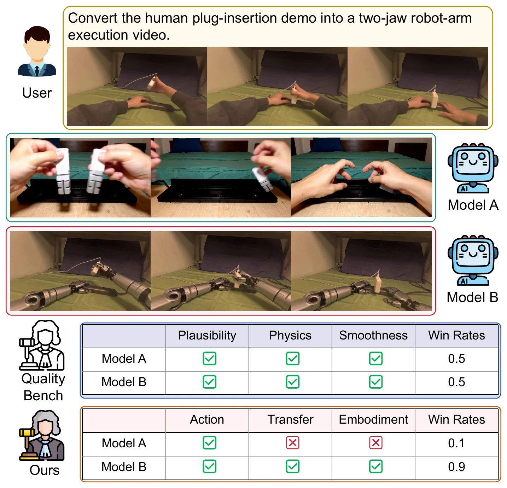
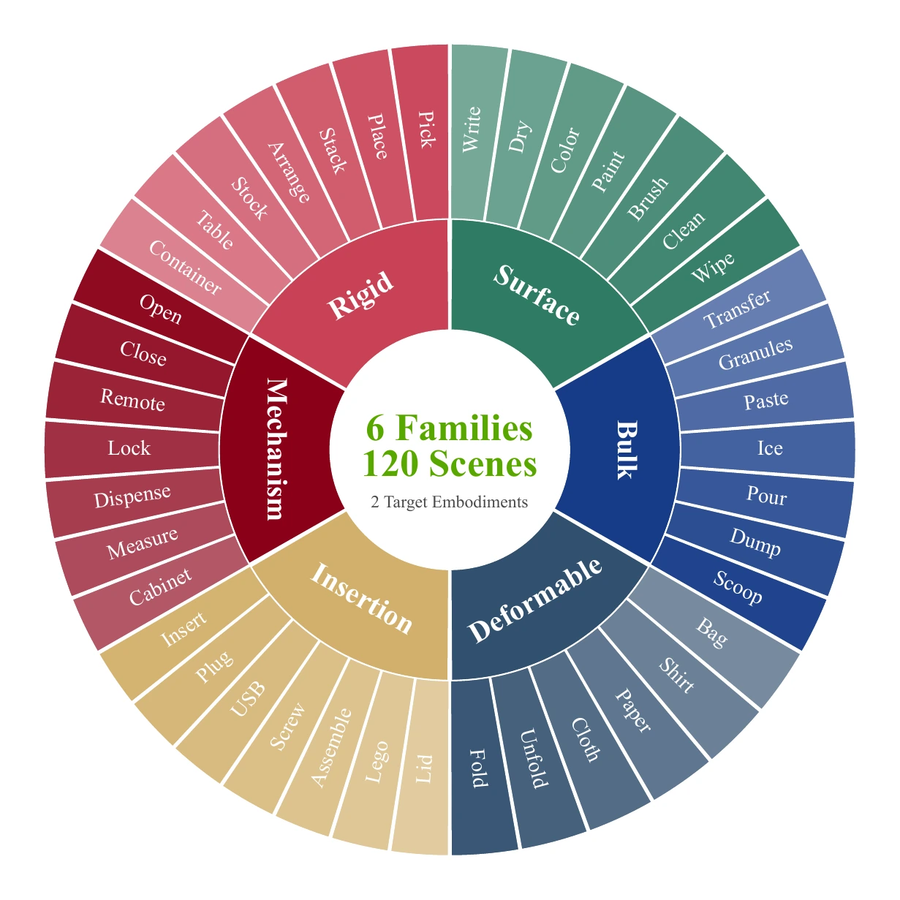

Plausible appearance and smooth motion hide actor leakage.
Source-conditioned cross-embodiment evaluation
H2R-Bench Benchmarking Human-to-Robot Manipulation Video Generation in World Models
A convincing robot video can still fail the transfer. H2R-Bench asks whether a video world model preserves the demonstrated goal, action, and functional contact while replacing the human actor with the requested robot embodiment.
1 Shanghai Jiao Tong University 2 Shanghai Artificial Intelligence Laboratory
The central test
Looking robotic is not the same as transferring the demonstration
Generic video evaluation rewards plausibility, smoothness, and visual quality. H2R transfer asks a stricter, source-relative question: did the requested robot actually perform the same manipulation through visible, functionally supported contact?
Goal, action, contact, and embodiment must agree.

Abstract
Can world models bridge the embodiment gap?
Robot demonstrations are expensive, while egocentric human videos are abundant. Video world models offer a possible bridge, but the bridge is useful only when the generated robot video preserves the manipulation evidence in a particular human source—not just its scene or visual style.
H2R-Bench pairs 120 human demonstrations with two target embodiments to form 240 transfer cases. Eleven video generators are evaluated across six physical task families with source-grounded metrics for goal, action, contact, embodiment, and video quality.
-
01
Source-relative transfer
The human video is evidence of what happened, not merely a visual reference for a generic robot clip.
-
02
Function before imitation
Robots may use different poses or trajectories, but contact and object response must preserve the demonstrated function.
-
03
Transfer-aware diagnosis
Five separate scores reveal whether a failure comes from the task, interaction, morphology, or presentation quality.
Benchmark positioning
Existing benchmarks see pieces of the transfer
H2R-Bench is the first setting in this comparison that jointly evaluates a human source, robot-video output, functional contact, and target embodiment.
Swipe horizontally to inspect all capabilities →
| Benchmark | Setting | Evaluation | ||||||
|---|---|---|---|---|---|---|---|---|
| I2V | RV | H2R | VQ | Goal | Action | Contact | Embodiment | |
| VBench | × | × | × | ✓ | × | × | × | × |
| WorldModelBench | ✓ | △ | × | ✓ | △ | △ | × | × |
| RBench | ✓ | ✓ | × | ✓ | ✓ | ✓ | × | △ |
| RoboWM-Bench | ✓ | ✓ | × | △ | ✓ | ✓ | × | × |
| RoboTrustBench | ✓ | ✓ | × | ✓ | ✓ | ✓ | × | △ |
| H2R-Bench (ours) | ✓ | ✓ | ✓ | ✓ | ✓ | ✓ | ✓ | ✓ |
✓ full support · △ partial support · × no support. H2R denotes source-conditioned human-to-robot transfer.
Observe → Retarget → Verify
One source, two embodiments, the same task evidence
Every model sees the same source cases and target specifications, but receives the human demonstration through its strongest native video or ordered-frame interface.
- 1205-second EgoDex sources
- 2target embodiments
- 240transfer cases
- 6physical task families
- 11evaluated generators
-
01 · Observe
Curate visible manipulation evidence
Select clips with task-relevant entities, interactions, and state changes—not merely recognizable activity labels.
-
02 · Specify
Annotate what must survive
Record initial/final state, action events, functional contact, object response, and embodiment-compatible roles; manually verify every annotation.
-
03 · Retarget
Use each model's native interface
Video-conditioned models receive the full clip; frame-based models receive ordered frames. No target-robot image is used in the main setting.

Six families
Grouped by the physical state change that defines success
- F1Rigid rearrangementWas the object relation preserved?
- F2Mechanism actuationDid the functional state change?
- F3Insertion & assemblyWere contact and alignment correct?
- F4Deformable configurationWas shape evolution preserved?
- F5Bulk-material transferWas material flow transferred?
- F6Surface transformationWas the visible surface change achieved?
Transfer-aware evaluation
Five signals, one evidence-weighted score
M1–M4 ask whether the source manipulation was transferred. M5 remains deliberately separate and lightly weighted, so visual polish cannot conceal missing robot interaction.
M115%
Goal-state completion
Did the final spatial, mechanism, attachment, deformation, material, or surface predicates become true?
M215%
Action-event completion
Were the required events—grasp, insert, release, pour, wipe, or fold—visibly carried out?
M330%
Functional contact transfer
Did robot-object contact occur at the right functional region, with a compatible mode and supported object response?
M430%
Embodiment correctness
Is the human actor gone, the requested end effector present, and the robot structure temporally consistent?
M510%
Task-agnostic video quality
Imaging quality, aesthetics, temporal stability, and motion smoothness—computed without the task annotation.
Weighted aggregate · 0–100
H2RCore100 × (0.15 Sgoal + 0.15 Saction + 0.30 Scontact + 0.30 Semb + 0.10 Svideo)
Contact and embodiment jointly carry 60%: a valid transfer needs both functionally supported interaction and the requested robot morphology.
Evidence budget25 frames / video
Independent MLLM judges3 judges
Shared rubric0–4 → [0, 1]
Contact comparisonsource + output
Leaderboard
Video-conditioned models lead both embodiments
Eleven models are evaluated on all 240 transfer cases. The complete component breakdown shows why goal recognition and video quality alone do not establish successful retargeting.
Swipe horizontally to inspect all metrics →
| Model | Parallel-Jaw Gripper | Dexterous Hand | ||||||||||
|---|---|---|---|---|---|---|---|---|---|---|---|---|
| M1 | M2 | M3 | M4 | M5 | H2RCore | M1 | M2 | M3 | M4 | M5 | H2RCore | |
| Video-conditioned generation | ||||||||||||
| Seedance 2.0 best | 0.725 | 0.813 | 0.776 | 0.768 | 0.793 | 77.3 | 0.744 | 0.832 | 0.855 | 0.911 | 0.799 | 84.6 |
| Wan2.7 | 0.706 | 0.791 | 0.766 | 0.772 | 0.796 | 76.5 | 0.718 | 0.804 | 0.835 | 0.910 | 0.795 | 83.1 |
| Kling-V3 | 0.710 | 0.807 | 0.751 | 0.707 | 0.798 | 74.5 | 0.707 | 0.800 | 0.819 | 0.885 | 0.802 | 81.7 |
| Image / frame-conditioned generation | ||||||||||||
| Mitty-EPIC14B | 0.581 | 0.668 | 0.598 | 0.585 | 0.732 | 61.5 | 0.587 | 0.684 | 0.598 | 0.392 | 0.732 | 56.1 |
| Veo 3.1 | 0.725 | 0.797 | 0.533 | 0.100 | 0.783 | 49.6 | 0.715 | 0.816 | 0.642 | 0.227 | 0.793 | 57.0 |
| Grok Imagine Video | 0.661 | 0.729 | 0.443 | 0.268 | 0.792 | 50.1 | 0.678 | 0.729 | 0.469 | 0.198 | 0.804 | 49.2 |
| LTX-2.3 | 0.473 | 0.545 | 0.292 | 0.012 | 0.773 | 32.1 | 0.520 | 0.592 | 0.377 | 0.132 | 0.780 | 39.8 |
| SkyReels-V3-R2V | 0.448 | 0.610 | 0.256 | 0.004 | 0.787 | 31.5 | 0.441 | 0.607 | 0.341 | 0.026 | 0.789 | 34.6 |
| Wan2.2 | 0.492 | 0.639 | 0.258 | 0.000 | 0.769 | 32.4 | 0.512 | 0.653 | 0.286 | 0.000 | 0.766 | 33.7 |
| LongCat | 0.472 | 0.583 | 0.243 | 0.000 | 0.790 | 31.0 | 0.428 | 0.545 | 0.298 | 0.020 | 0.793 | 32.0 |
| HunyuanVideo 1.5-I2V | 0.535 | 0.549 | 0.184 | 0.005 | 0.806 | 30.0 | 0.499 | 0.555 | 0.185 | 0.041 | 0.808 | 30.7 |
-
Best H2RCore84.6
Seedance 2.0 leads
Best on both target embodiments, with the clearest contact and morphology transfer.
-
Video quality range0.73–0.81
Polish clusters tightly
M5 compresses models that differ dramatically in whether a robot performs the task.
-
H2RCore range30.0–84.6
Transfer separates models
Source-grounded criteria reveal more than fifty points of capability spread.
-
Interface patternTop 3
Full-video conditioning leads
The three models that consume the complete source clip occupy the first three positions.
Matched embodiment analysis
The hand is often easier—but not universally
average H2RCore for Dexterous Hand over Parallel-Jaw Gripper; 9 of 11 models improve.
mean contact-transfer gain, with the hand higher for all 11 models.
A target-robot reference helps Wan2.7 but reduces H2RCore for Kling-V3 and Seedance 2.0.
Transfer diagnostics
Video quality is not evidence of robot transfer
H2RCore expands a narrow quality ranking into interpretable failure signals: human-led manipulation, wrong end effectors, unsupported object response, contact mismatch, and missing events.
Rank association
ρ = 0.14Video quality and transfer validity barely agree
Across 22 model–embodiment pairs, VBench quality spans only 0.73–0.81 while H2RCore spans 30.0–84.6.
Matched source ablation
Nine ordered frames do not replace the source video
On 24 matched sources (48 transfer cases), switching Seedance 2.0 from full video to nine ordered images preserves broad task evidence but sharply degrades contact and embodiment. Video quality changes by less than 0.02.
Parallel-Jaw Gripper−27.6
Full video 70.99 frames 43.4
Dexterous Hand−41.4
Full video 85.19 frames 43.7
Human validation
Automatic transfer scores track human judgment
Three human raters independently score M1–M4 on 660 generated videos. Automatic MLLM scores are hidden during annotation and compared only after the human evaluations are complete.
Per-video agreement
Contact and embodiment scores align most strongly
- M1 · Goal0.791
- M2 · Action0.818
- M3 · Contact0.880
- M4 · Embodiment0.877
Scope
What H2R-Bench does—and does not—measure
H2R-Bench makes visible transfer evidence measurable; it does not turn generated video into proof of physical executability.
Visible transfer evidence
Measures what can be verified in video, not downstream policy performance or real-robot success.
Two embodiments
Parallel-jaw grippers and dexterous hands cover distinct morphologies, but not the full robot design space.
Native interfaces
Model capability and source-conditioning interface vary together, so group-level patterns are descriptive.
Judgment under uncertainty
Occlusion, subtle contact, and severe artifacts can remain ambiguous despite three judges and human validation.
Citation
Cite H2R-Bench
If H2R-Bench supports your work on video world models, cross-embodiment generation, or robot learning, please cite the paper.
@article{rong2026h2rbench,
title={H2R-Bench: Benchmarking Human-to-Robot Manipulation Video Generation in World Models},
author={Rong, Dingyi and Shi, Yue and Ma, Chaofan and Cao, Jiezhang and Wang, Zongrui and Zhang, Zeyu and Mu, Yao and Zhai, Guangtao and Liu, Ning},
journal={arXiv preprint arXiv:2608.13049},
year={2026}
}